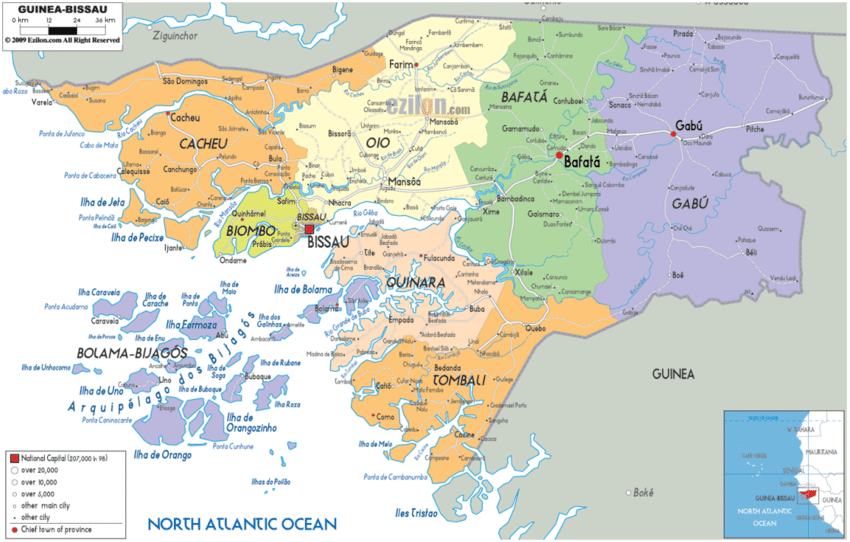

História da Guiné-Bissau
Período Pré-Colonial
Antes da chegada dos europeus, o território era habitado por diversos grupos étnicos, como os Balantes, Fulas, Mandingas e Bijagós. Essas comunidades viviam da agricultura, pesca e comércio regional.
Colonização Portuguesa
No século XV, os portugueses chegaram à região e estabeleceram feitorias comerciais. Durante séculos, o território foi colônia de Portugal, sendo utilizado principalmente para o comércio e exploração de recursos.
Luta pela Independência
A luta pela independência começou na década de 1960, liderada pelo Partido Africano para a Independência da Guiné e Cabo Verde (PAIGC). Após anos de conflito armado, a independência foi proclamada em 24 de setembro de 1973 e reconhecida por Portugal em 1974.
Período Pós-Independência
Após a independência, o país enfrentou desafios políticos e econômicos. Apesar das dificuldades, a Guiné-Bissau continua buscando estabilidade, desenvolvimento e fortalecimento das suas instituições.
Mapa da Guiné-Bissau
